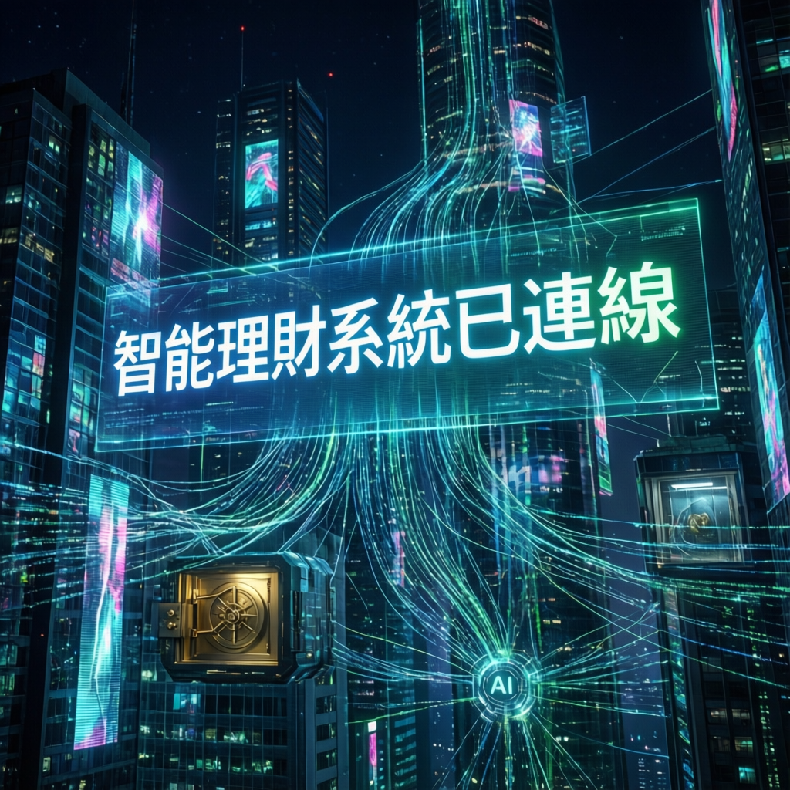

OpenAI 旗下人工智慧助手正探索更深層的金融整合服務，業界密切關注其對個人理財生態的潛在衝擊

本次報告指出，人工智慧領域的領導者 OpenAI 正積極拓展其旗艦產品 ChatGPT 的應用邊界，目標直指個人金融核心。研究顯示，該公司有意讓 ChatGPT 與用戶的儲蓄帳戶建立直接連結，此舉標誌著 AI 助手從資訊服務向實質金融操作平台的重大轉型。
專家分析認為，這項發展將對傳統銀行業務模式及個人理財習慣產生深遠影響，同時也引發了關於數據安全與隱私保護的廣泛討論。
業界觀察人士深入剖析了此項技術整合的多個關鍵面向。數據顯示，AI 驅動的個人金融管理市場正經歷快速成長期，主要科技企業紛紛布局相關領域。
研究團隊採用了先進的安全協議與數據加密技術，透過多層次驗證機制確保用戶資產安全。該方案在測試環境中展現出穩定的性能表現，為大規模商用奠定了技術基礎。
核心設計理念強調透明可控與用戶授權，所有金融操作均需經過明確的確認程序，避免自動化決策可能帶來的風險。
AI 與個人金融的深度整合代表著智慧助理技術的第三階段演化——從資訊查詢、任務執行到資產管理。這一轉變不僅重塑用戶與金錢的互動方式，更可能催生全新的金融服務業態。然而，技術創新與風險管控之間的平衡，將是決定此願景能否順利實現的關鍵因素。
業界觀察人士指出，此項技術突破將對相關領域產生重要影響。隨著技術不斷完善，預計將在多個行業得到廣泛應用。研究指出，未來三至五年內，具備金融操作能力的 AI 助手有望成為主流產品形態。
同時，監管機構與產業界需攜手建立適應新技術特點的治理框架，在鼓勵創新與保障消費者權益之間尋求最佳平衡點。本次報告認為，這場由 AI 驅動的金融變革才剛剛揭開序幕。